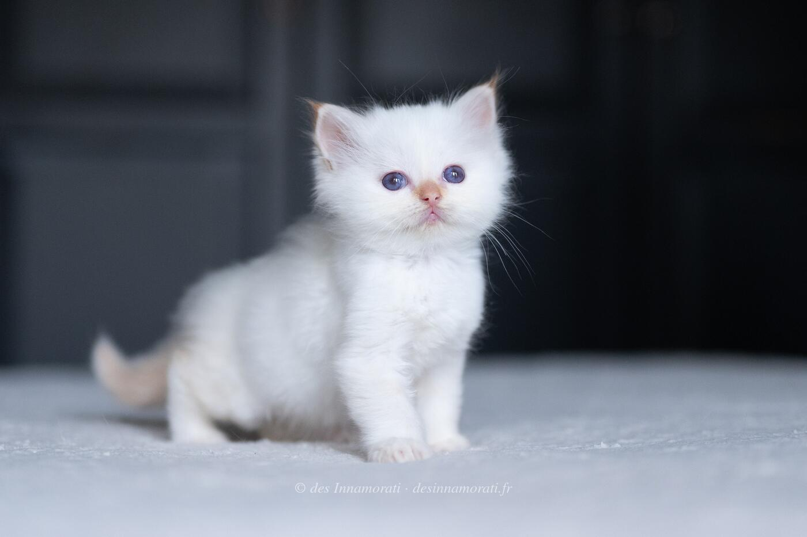

RobeMâle · Red tabby point
ParentsT'as Pas Vu Pépette des Innamorati × Taran du Bas de Lock
StatutAdopté
Album8 photos, de septembre 2023 à avril 2026


Photos réduites et marquées. Elles appartiennent à la Chatterie des Innamorati et ne peuvent pas être reprises dans une annonce.